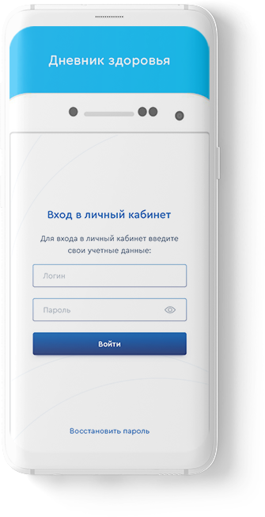
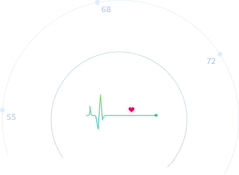

О сервисе
Функции
Возможности
Партнеры
Оставить заявку
Расширяем возможности предоставления
качественных медицинских услуг
«Дневник здоровья» – новый сервис для самоконтроля
показателей состояния здоровья, разработанный для
участников программы «Мое здоровье».
Узнать больше

Что такое «Дневник здоровья»?
Дневник пациента — это удобный онлайн-сервис:
Вносите результаты измерений вручную или с помощью
интегрированных приборов
Ведите персональную медицинскую карту с историей
ваших измерений
Делитесь результатами измерений со специалистами
для повышения эффективности лечения
Получайте рекомендации, созданные специально для вас
Оставить заявку

Функции приложения
Планирование графика
приема лекарств
Планирование графика
приема лекарств
Планирование графика
приема лекарств
Планирование графика
приема лекарств
Планирование графика
приема лекарств
Планирование графика
приема лекарств